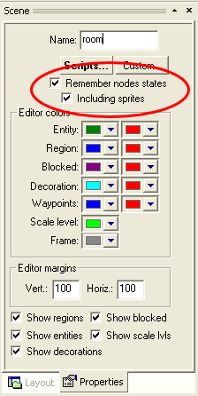
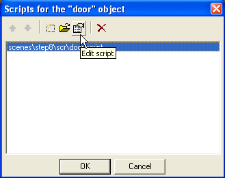

Once out scene is complete, we can look closer at some additional procedures you'll probably need when designing your game.
Scene states
The engine is able to automatically store states of various scene objects and restore them later when the player revisits the scene. This behavior can be enabled on the scene properties dialog in SceneEdit. You can also choose if you want your scene objects to remember what sprite they were using, in case you've changed them programmatically.

Note that saving scene state is based on the names of your scene objects. It mean you shouldn't have two objects with the same name or you may get unpredictable results.
Changing to another scene
Your game probably won't be taking place in a single room. You already know how to create scenes but how to interconnect them? There may be many ways of invoking a scene change, therefore WME uses scripting for this. Let's try it. We've already made the door an active object in Step 7 of this tutorial. Select the "door" region entity in the node list and click the "Scripts..." button. Because the door doesn't have any script assigned yet, SceneEdit will prompt you to create a new script. Select the "scene object" template and click "Ok". This will create a new script called "door.script". The script dialog will appear. Double click the "door.script" in then list box, or click the "Edit script" toolbar button.

The script will open in a text editor. You can see several event handlers created by default. We will only want our door to react on clicking the left mouse button. Delete all event handlers. All we need to do now is to add the left-click handler, which will make the actor walk to the door and change to another scene. Add this piece of code to the script:
on "LeftClick"
{
actor.GoToObject(this);
Game.ChangeScene("scenes\menu\menu.scene");
}
|
The first line will call the GoToObject method, which sends the actor to the door, and the second line will tell the game to load a new scene, namely the "scenes\menu\menu.scene". Of course, you can use a filename of any other scene you already have in your project.
See the WME demo project for a finished example.